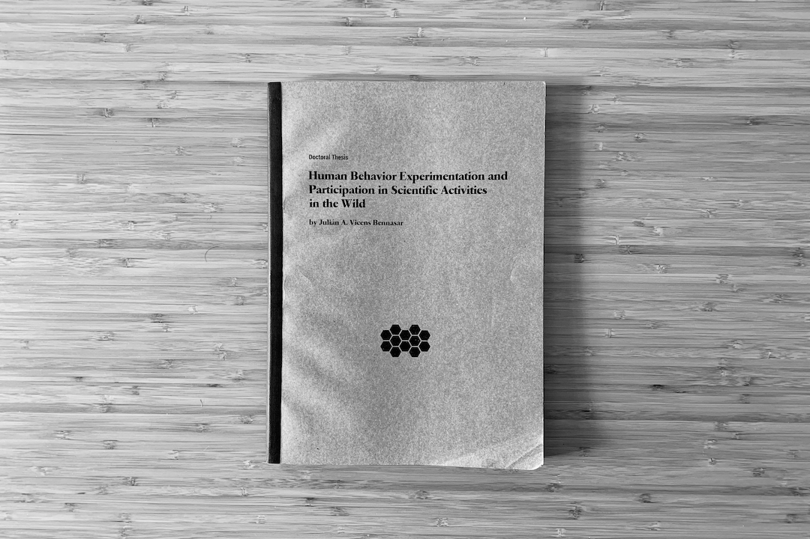

Tesi
Experimentació en comportament humà i participació en activitats científiques al carrer
Tesi doctoral defensada la primavera de 2018 a la Universitat Rovira i Virgili (Tarragona). Un treball que aprofundeix en els sistemes complexos socials, l'experimentació col·lectiva, la participació pública i la ciència ciutadana. Inclou temes com la cooperació, el canvi climàtic, la cura de la salut mental, la ciència al carrer i els sistemes sociotecnològics, entre d'altres.

Tesi doctoral «Human Behavior Experimentation and Participation in Scientific Activities in the Wild» presentada a la Universitat Rovira i Virgili durant la primavera de 2018. Imatge: Julián Vicens (cc-by).
La cooperació és un dels trets de comportament que defineixen els éssers humans —i altres sistemes complexos— i que ens ha permès evolucionar. Tanmateix, avui dia, després d'anys d'avenços científics, encara estem intentant entendre per què alguns sistemes, i particularment els humans, cooperen. Els experiments de laboratori sobre comportament humà basats en dilemes socials modelats com a jocs de comportament intenten donar llum a aquestes incògnites.
Un dels enfocaments recents en aquesta línia ha estat traslladar l'experimentació en comportament humà dels laboratoris als espais públics, on els comportaments es donen de manera natural, per estudiar els principals trets de comportament —cooperació, confiança, reciprocitat, aversió al risc o sentit de col·lectivitat—. Les pràctiques de ciència ciutadana han proporcionat un marc perfecte per experimentar al carrer i per promoure la participació de persones que habitualment no estan implicades en la ciència.
Aquesta tesi se centra a fer avançar el camp de l'experimentació de comportament en entorns oberts mitjançant experiments basats en pràctiques de ciència ciutadana. El treball es divideix en dos blocs: un orientat al disseny de plataformes experimentals i un altre centrat en l'anàlisi dels resultats experimentals. En el primer, estudiem com dissenyar plataformes de ciència ciutadana que permetin dur a terme activitats científiques al carrer i en presentem dues, aplicades a dos contextos diferents. En el segon, realitzem estudis experimentals de sistemes socials per analitzar trets de comportament, buscar l'emergència de patrons de comportament i també avaluar el disseny de les plataformes.
Amb la primera plataforma investiguem com els sistemes de ciència ciutadana poden servir de catalitzador per promoure el pensament científic i augmentar la implicació en la ciència. Presentem Natural Patterns, una plataforma que proposa activitats científiques basades en el mètode d'investigació científica. Presentem els resultats d'un estudi d'experiència d'usuari i, a la llum de les aportacions dels participants, descrivim una sèrie de principis de disseny que augmenten la motivació dels participants i promouen la participació científica al carrer en aquest context concret.
La segona plataforma està dissenyada per estudiar trets de comportament humà i per ajudar a crear experiments al carrer, on emergeixen fenòmens socials reals, fomentant la participació en el marc de la ciència ciutadana. Amb aquest objectiu, la plataforma és molt modular i inclou un ampli ventall de jocs de comportament. És lleugera, cosa que permet experimentar en llocs amb poca infraestructura —espais públics, festivals o congressos—, i escalable, permetent introduir nous dilemes socials i interaccions. Avaluem la participació, la robustesa i la qualitat de les dades recollides en tots els experiments duts a terme fins ara.
Pel que fa als estudis experimentals, presentem els dos primers experiments de comportament humà duts a terme amb la plataforma. En el primer, els participants han de predir moviments de mercat sota diferents circumstàncies. Concretament, estudiem si les estratègies que emergeixen són robustes en les rèpliques dels experiments, realitzades en diferents localitzacions amb mostres sociodemogràfiques molt diferents. El segon experiment estudia els patrons de comportament —o fenotips— que emergeixen de les decisions que prenen els participants quan s'enfronten a un conjunt de dilemes socials. Concretament, ens centrem en l'anàlisi de les dades mitjançant tècniques d'aprenentatge no supervisat i concloem que el comportament dels participants davant d'aquest conjunt de dilemes socials amb tensions diferents es pot resumir en un total de cinc fenotips.
Els dos últims experiments presentats en aquesta tesi també aborden i aprofundeixen plenament en l'experimentació de comportament humà. El primer és un dilema de risc col·lectiu en què un grup de participants ha de contribuir amb els seus béns per superar un dany col·lectiu, concretament el canvi climàtic. Estudiem com les desigualtats de recursos provoquen comportaments injustos, fent que els participants més vulnerables surtin més perjudicats que els més afavorits.
Finalment, l'últim experiment és també un dilema de risc col·lectiu, però en aquest cas no hi ha desigualtats econòmiques entre els participants. A diferència de la resta d'experiments, aquest es duu a terme dins d'un col·lectiu concret: l'ecosistema de la salut mental, format principalment per persones afectades per trastorns mentals, cuidadors i familiars. Estudiem les tensions que sorgeixen quan tots ells col·laboren col·lectivament per resoldre un mal col·lectiu incert. Dels resultats de l'experiment es desprèn que el cost de les accions col·lectives recau sobre les persones afectades per trastorns mentals.
Per concloure, les plataformes que hem construït ens ajuden a dur a terme activitats científiques participatives en el marc de la ciència ciutadana, que té moltes aplicacions, des de l'aprenentatge fins a l'activisme. Això és especialment cert en el cas de la plataforma d'experimentació que estudia el comportament humà in vivo, que permet accedir a una mostra representativa de la població i integrar els participants en el procés de recerca. La plataforma ajudarà a establir les bases per a futurs experiments de comportament al carrer. A la llum dels resultats dels experiments socials podem comprendre com ens comportem col·lectivament, en societat o dins d'un grup determinat, quan ens enfrontem a dilemes socials, i, en conseqüència, avaluar els trets de comportament i l'emergència de patrons de comportament gràcies a tècniques d'aprenentatge automàtic no supervisat. Aquestes troballes ofereixen noves maneres d'estudiar les tensions que existeixen en una comunitat determinada al voltant d'una qüestió social concreta.
Aquesta tesi doctoral es va realitzar sota la supervisió de la Dra. Mercè Gisbert i el Dr. Jordi Duch, i en col·laboració amb el Dr. Anxo Sánchez, el Dr. Josep Perelló o el Dr. Haoqi Zhang, entre altres. Aquest treball es va defensar a la Universitat Rovira i Virgili el 18 de maig de 2018, davant del tribunal format per la Dra. Marisa Ponti, el Dr. Sergio Gómez i el Dr. Frederic Guerrero. Va obtenir la qualificació d'«Excel·lent Cum Laude», així com la Menció Internacional i la Menció de Doctorat Industrial.
Recursos
-
Vicens, J. (2018). «Human Behavior Experimentation and Participation in Scientific Activities in the Wild»